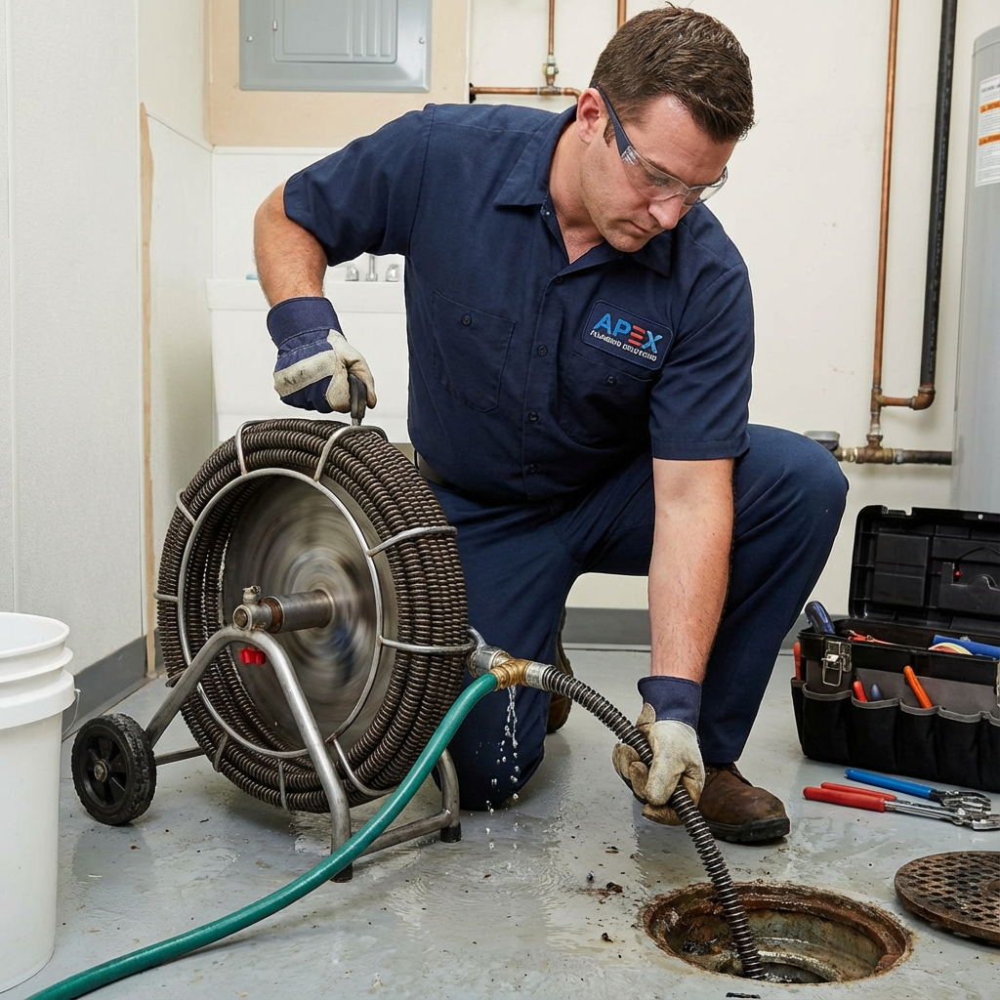
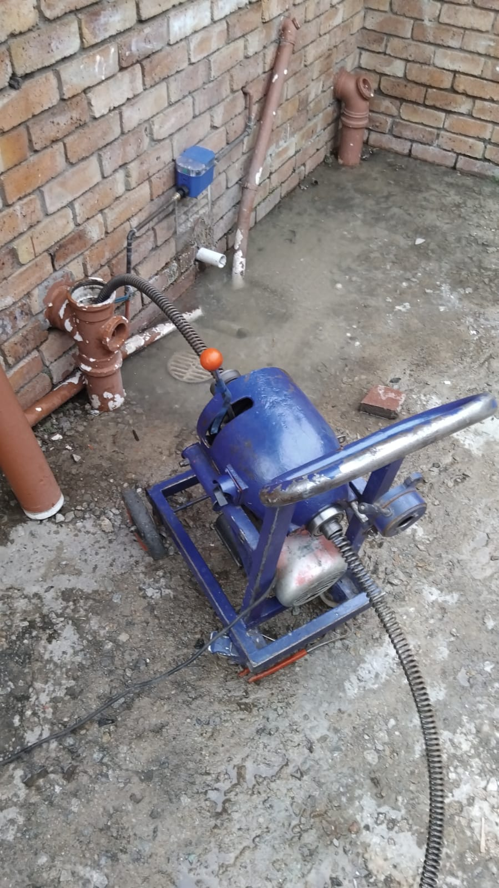
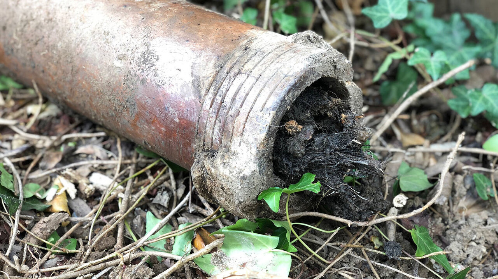
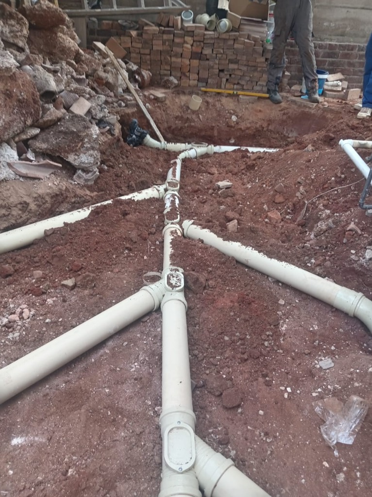

Drain Cleaning & Unblocking in Johannesburg
Slow or fully blocked drains, cleared properly the first time — from a single sink to a main municipal sewer line.

Jetting & Rodding SpecialistsWhat we clear
Kitchen and bathroom sinks, showers and baths, and main sewer lines. Most household blockages come from a build-up of fat, hair, soap residue or, outdoors, tree roots finding their way into older clay pipework — common in Johannesburg's more established suburbs.
How we unblock a drain
For most internal blockages, a mechanical rooter (drain snake) clears the obstruction without needing to open up any pipework. For stubborn or recurring blockages, especially on main lines, we use high-pressure water jetting to scour the full width of the pipe, and can run a camera inspection first to confirm exactly where and what the blockage is before we start.
Prevention
A few small habits go a long way — we've written up our full list in how to prevent blocked drains at home. If a drain is blocking repeatedly despite good habits, that usually points to a structural issue like root intrusion or a collapsed section, which is where our sewer line service comes in.
Advanced Drain Unblocking Technology
We deploy heavy-duty electro-mechanical equipment and root cutting tools to clear blockages permanently.

Rotary Drain Cleaning Unit
Motorized high-torque snake cutting through stubborn obstructions in main gully lines.

Root Intrusion Clearing
Complete removal of invasive roots penetrating underground earthenware pipes.

Structural Line Repair
Excavation, replacement, and re-grading when pipes have collapsed or cracked.

Frequently Asked Questions
What causes most blockages?
Indoors, it's usually fat, hair and soap residue building up in pipe bends. Outdoors and on main lines, tree root intrusion into older pipe joints is the most common cause we see in established Johannesburg suburbs.
Can I use chemical drain cleaners?
Occasional use on a slow (not fully blocked) drain is usually fine, but repeated use can damage older pipes and doesn't fix the underlying build-up. If a drain keeps blocking, it's worth having it professionally cleared and inspected.
How do you unblock a main sewer line?
We typically start with a camera inspection to locate the blockage, then clear it with high-pressure jetting. If the inspection shows a collapsed or cracked pipe rather than just debris, we'll discuss relining or replacement options.
Slow or blocked drain?
We'll clear it properly the first time — no repeat call-outs for the same blockage.
Prefer to message? WhatsApp us on the same number